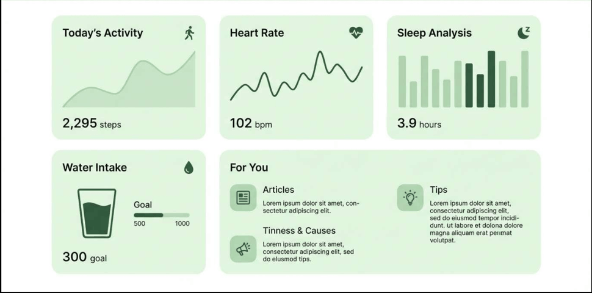

04 — UX CASE STUDY
Steady
A supportive digital companion designed to help people prepare for medical and dental appointments, communicate their concerns, and build confidence through gradual progress.
THE PROBLEM
Appointments can feel overwhelming.
People experiencing medical or dental anxiety may delay appointments, struggle to explain their fears, or feel overwhelmed when preparing for a visit. Steady was designed to provide a calmer and more structured way to prepare.
THE SOLUTION
A companion before, during, and after appointments.
Steady brings preparation, communication, grounding exercises, and progress tracking into one supportive experience.
KEY FEATURES
Designed around the user's journey.
Anxiety Check-In
Helps users identify how they are feeling before an appointment.
Appointment Preparation
Guides users through practical preparation before visiting their provider.
Tell Your Provider
Helps users put their concerns into words they can share with their provider.
Grounding Exercises
Provides simple techniques users can access when they feel overwhelmed.
Progress Tracker
Lets users recognize progress and build confidence over time.
Home Dashboard
Brings preparation tools and progress into one accessible starting point.
DESIGN
Calm, supportive, and approachable.
The visual direction uses soft colors, simple layouts, and approachable visual elements to avoid making the experience feel overly clinical.
PROJECT SCREENSHOT
High-fidelity interface.

WHAT I LEARNED
Designing for emotional needs.
Steady helped me think beyond visual design and consider how interface decisions can support users during emotionally difficult experiences.